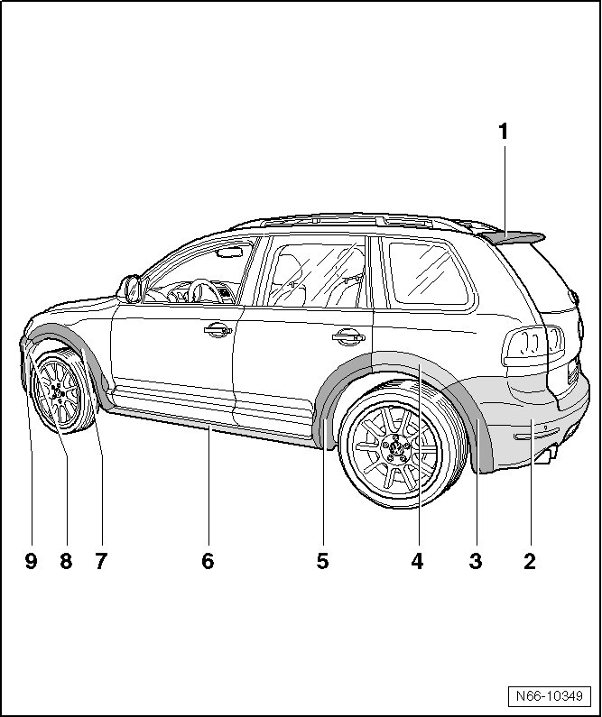

Component Overview
Wheel Housing, Fender and Sill Panel Extensions
Component Overview
• The overview shows only the left side. The overview for the right side is identical.

1 Rear spoiler
• Material PUR - GF 20
• Removing and Installing, refer to --> [ Rear Spoiler ] Rear Spoiler
2 Rear Bumper Cover
• Removing and Installing, refer to --> [ Bumper Cover ] Rear Bumper
3 Rear lower wheel housing extension
• Material PUR - GF 17
• Adhered to the rear bumper cover.
4 Rear wheel housing extension
• Material PUR - GF 17
• Adhered to side panel.
5 Rear door, wheel housing extension
• Material PUR - GF 17
• Adhered to the rear door.
6 Sill panel extension
• Material PUR - GF 17
• Glued to the sill panel
• R50, refer to --> [ Sill Extension, R50 ]
• R-Line, refer to --> [ Sill Extension, R-Line ]
7 Wheel housing extension, fender
• Material PUR - GF 17
• Adhered to the fender.
8 Wheel housing extension, bumper
• Material PUR - GF 17
• Glued to the front bumper cover
9 Front Bumper Cover
• Removing and Installing, refer to --> [ Bumper Cover ]